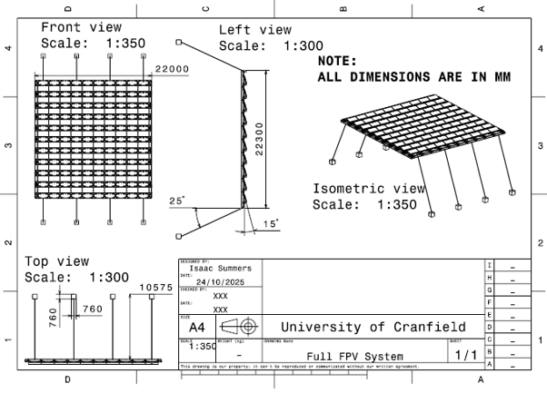
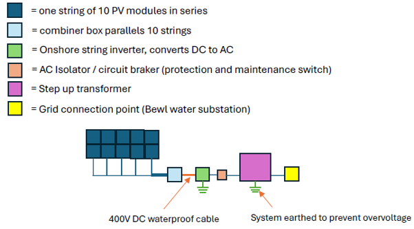
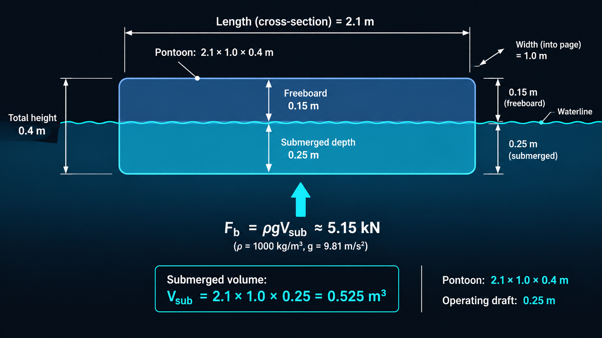
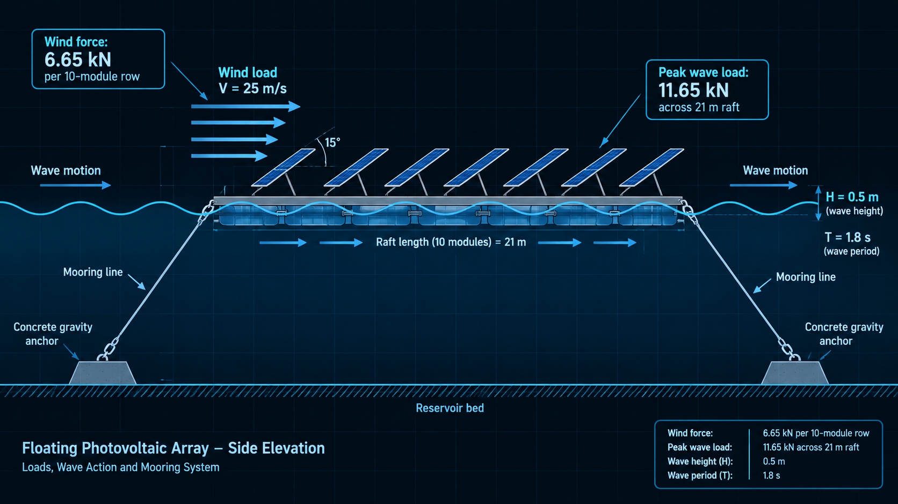
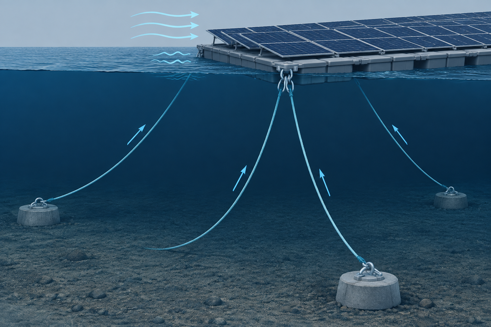
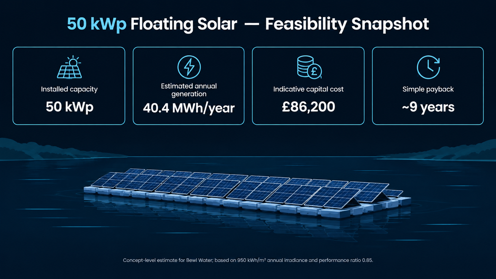
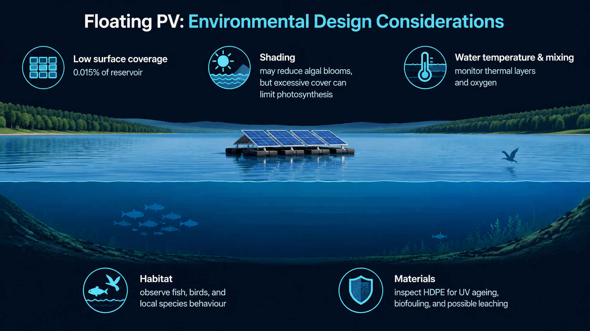
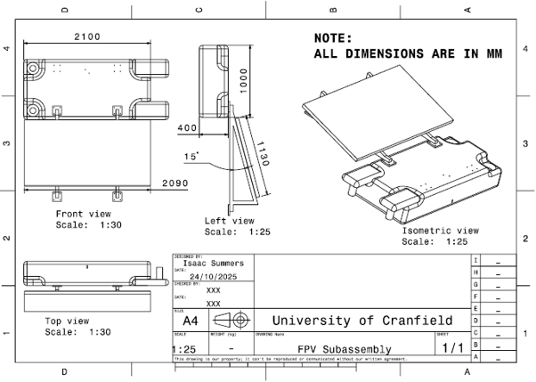

Ground-mounted solar competes for land. Floating photovoltaics offer another option: using suitable reservoir surfaces while maintaining a small fraction of the waterbody’s area for energy generation.
This study developed a concept-level design for a 50 kWp array at Bewl Water, southeast England’s largest inland reservoir. The work considered not only annual generation but also the mechanical, electrical, environmental, and economic requirements needed for a plausible freshwater installation.
The proposed array uses 100 monocrystalline PERC modules rated at 500 Wp each, arranged as a 10 by 10 layout to provide a total installed capacity of 50 kWp. Modules are mounted at a 15° tilt: a lower angle than the typical ground-mounted optimum, chosen to reduce wind and wave loading on the floating structure.
The layout includes 1 m access walkways and 0.5 m perimeter clearance. The estimated total footprint is approximately 467 m², equivalent to about 0.015% of Bewl Water’s 3.1 km² surface area.
The support structure is a modular HDPE pontoon lattice with cross-members supporting the PV modules. Each pontoon is approximately 2.1 m × 1.0 m × 0.4 m, with the walkway layout intended to provide access for inspection and maintenance.
The 100 modules are divided into 10 strings, each containing 10 modules in series. At standard test conditions, each string produces approximately 384 V DC at 13.04 A. The strings feed DC combiner boxes, then an onshore string inverter, isolator, transformer, and local grid connection.
Locating the inverter onshore reduces the amount of power-conversion equipment exposed to the reservoir environment. The design also considers waterproof junction boxes, dual-insulated cabling, earthing and bonding, lightning protection, fire protection, and SCADA monitoring of system performance and environmental conditions.


Buoyancy was assessed using Archimedes’ principle. For a pontoon with a 2.1 m × 1.0 m plan area and 0.25 m operating draft, the submerged volume is 0.525 m³.
The available buoyancy was compared with the module, mounting, and maintenance loads to check that the platform retained adequate freeboard under the assumed operating condition.
Static stability was assessed using metacentric height:
The estimated metacentric height was approximately 1.075 m. A positive value indicates an initial restoring tendency for small heel angles under the assumptions used in the concept-level calculation.
Wind and wave loads were estimated to develop an initial mooring design basis. A conservative wind speed of 25 m/s was applied to the projected area of one 10-module row. Wave loading was estimated with the Morison equation using a conservative 0.5 m wave height, 1.8 s period, and approximately 10 m water depth.
The calculation estimated a wind force of 6.65 kN per row. In the wave-force estimate, inertia dominated the drag component; the calculated peak wave force was approximately 554 N per metre of pontoon section, or 11.65 kN across the full 21 m raft width under the stated extreme case.
These values are preliminary design estimates: the report recommends validating the assumed hydrodynamic coefficients and load response through simulation or physical testing.


The proposed system uses symmetric catenary mooring lines with a line angle below 25°. A factored design tension of 33.2 kN was estimated for the raft, corresponding to approximately 36.6 kN along the inclined line.
Eight HMPE mooring lines were proposed to distribute the load symmetrically and provide redundancy. Under the report’s load-sharing assumption, each line carries approximately 4.58 kN, below the assumed 16.65 kN working load per line.
Submerged concrete gravity anchors were selected as a simple concept for the reservoir setting. The estimated anchor volume was approximately 0.44 m³, or around one tonne of concrete per anchor. The final arrangement would require detailed geotechnical, hydrodynamic, and site-specific verification.
Annual output was estimated using an in-plane irradiance of 950 kWh/m² and a system performance ratio of 0.85. The performance ratio accounts in aggregate for expected system losses such as temperature, optical, inverter, electrical, mismatch, and degradation effects.
The concept-level capital estimate was £86,200. At the assumed electricity value of £0.2573/kWh, gross annual value was estimated at £10,388. After annual operation and maintenance costs of 1% of capital cost, the estimated net annual value was approximately £9,527, giving a simple payback of about nine years.


Using the report’s assumed grid carbon intensity of 125 gCO₂/kWh, the annual generation corresponds to approximately 5.05 tonnes of avoided CO₂ per year, or around 126 tonnes over a 25-year operating life before considering lifecycle emissions and degradation.
The array occupies only around 0.015% of the reservoir surface in this concept, limiting the scale of shading compared with larger coverage scenarios. Nonetheless, floating PV can alter light penetration, water temperature, mixing, oxygen distribution, and ecological use of the waterbody.
Material durability and environmental monitoring also matter: the report identifies potential biofouling, UV-related degradation, and chemical leaching as issues for further assessment, alongside the benefits and risks of reduced algal growth and habitat changes.
This concept study brought together array configuration, electrical design, pontoon buoyancy and stability, environmental considerations, mooring loads, energy yield, and project economics in one system-level feasibility assessment.
The central engineering trade-off was clear: a floating array must capture useful solar energy while keeping wind and wave loads manageable, maintaining safe electrical isolation near water, providing access for maintenance, and limiting ecological disturbance.
The next stage should refine the concept with site-specific wind and wave data, detailed mooring and anchor analysis, electrical protection studies, and environmental monitoring. Physical or numerical validation of hydrodynamic loads and long-term material performance would strengthen the design basis before deployment.
↓ Download Full Report (PDF)